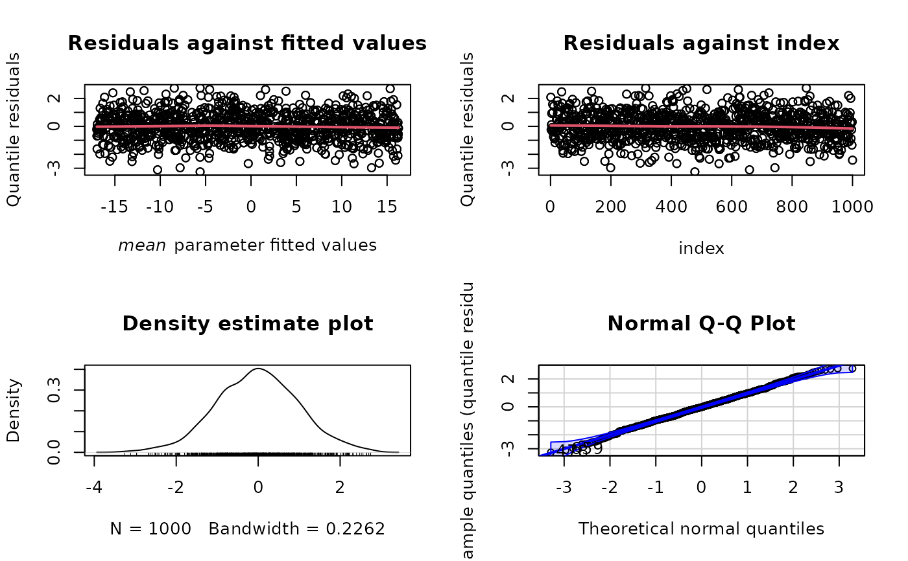
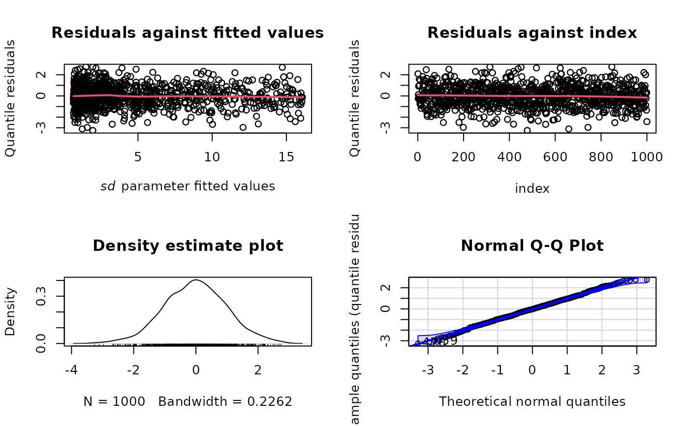
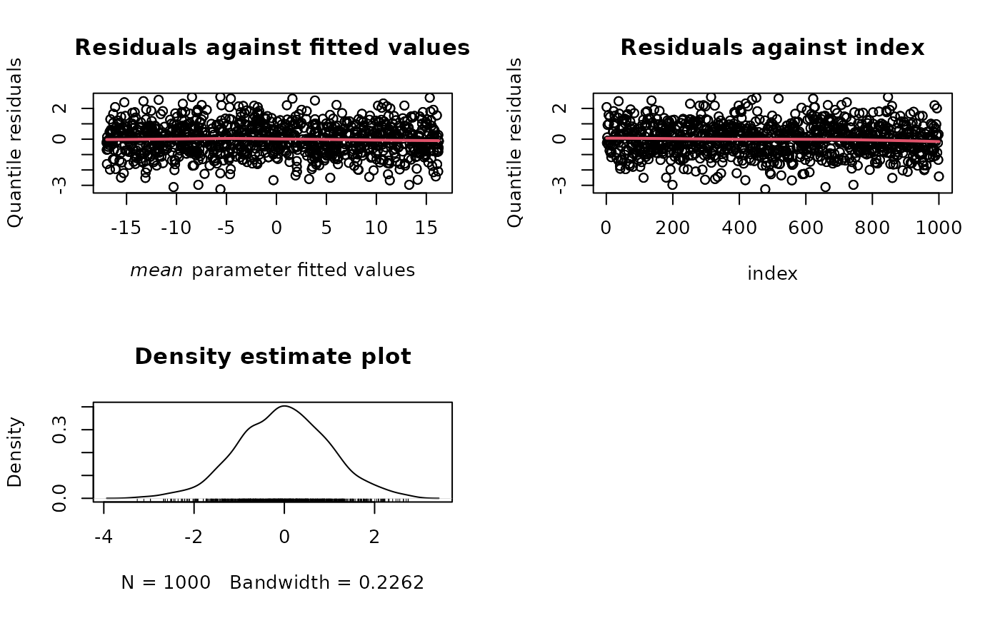
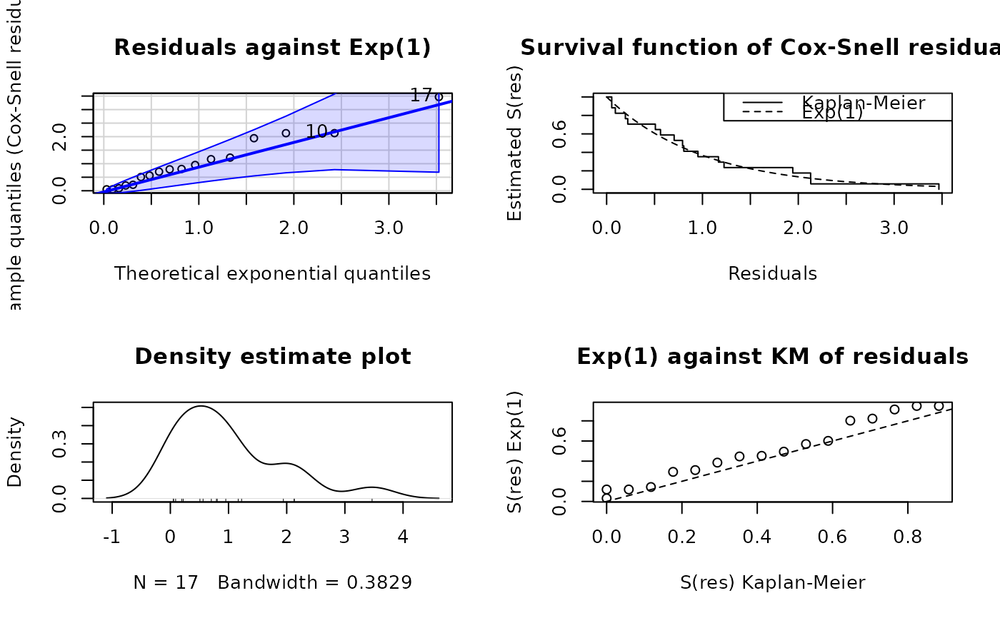
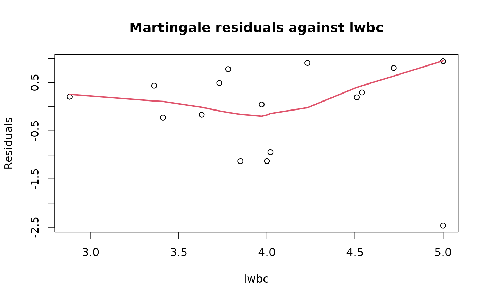
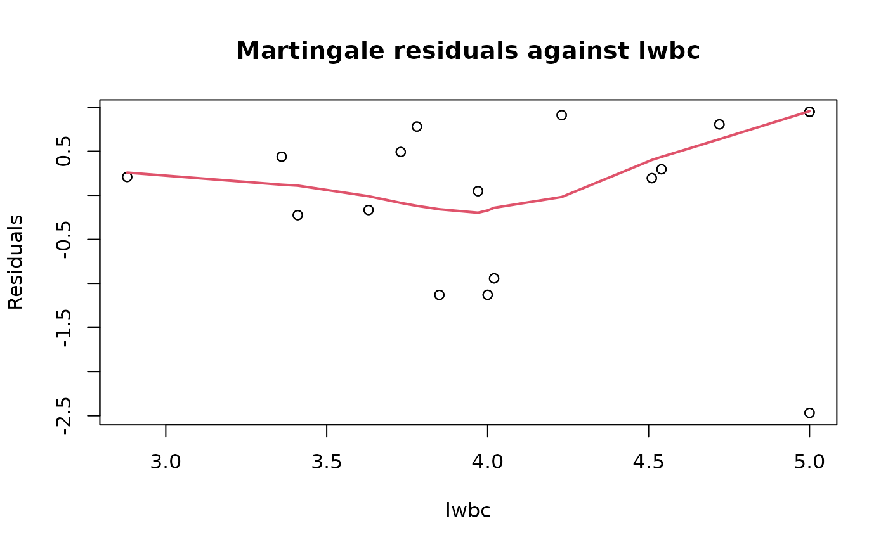

![[Experimental]](figures/lifecycle-experimental.svg)
Provides plots of Cox-Snell, martingale Randomized quantile residuals.
Arguments
- x
a
maxlogLobject.- type
a character with the type of residuals to be plotted. The default value is
type = "rqres", which is used to compute the normalized randomized quantile residuals.- parameter
which parameter fitted values are required for
type = "rqres". The default is the first one defined in the pdf,e.g, indnorm, the default parameter ismean.- which.plots
a subset of numbers to specify the plots. See details for further information.
- caption
title of the plots. If
caption = NULL, the default values are used.- xvar
an explanatory variable to plot the residuals against.
- ...
further parameters for the plot method.
Details
If type = "rqres", the available subset is 1:4, referring to:
1. Quantile residuals vs. fitted values (Tukey-Ascomb plot)
2. Quantile residuals vs. index
3. Density plot of quantile residuals
4. Normal Q-Q plot of the quantile residuals.
Author
Jaime Mosquera Gutiérrez, jmosquerag@unal.edu.co
Examples
library(EstimationTools)
#----------------------------------------------------------------------------
# Example 1: Quantile residuals for a normal model
n <- 1000
x <- runif(n = n, -5, 6)
y <- rnorm(n = n, mean = -2 + 3 * x, sd = exp(1 + 0.3* x))
norm_data <- data.frame(y = y, x = x)
# It does not matter the order of distribution parameters
formulas <- list(sd.fo = ~ x, mean.fo = ~ x)
support <- list(interval = c(-Inf, Inf), type = 'continuous')
norm_mod <- maxlogLreg(formulas, y_dist = y ~ dnorm, support = support,
data = norm_data,
link = list(over = "sd", fun = "log_link"))
# Quantile residuals diagnostic plot
plot(norm_mod, type = "rqres")

plot(norm_mod, type = "rqres", parameter = "sd")

# Exclude Q-Q plot
plot(norm_mod, type = "rqres", which.plots = 1:3)
#----------------------------------------------------------------------------
# Example 2: Cox-Snell residuals for an exponential model
data(ALL_colosimo_table_4_1)
formulas <- list(scale.fo = ~ lwbc)
support <- list(interval = c(0, Inf), type = 'continuous')
ALL_exp_model <- maxlogLreg(
formulas,
fixed = list(shape = 1),
y_dist = Surv(times, status) ~ dweibull,
data = ALL_colosimo_table_4_1,
support = support,
link = list(over = "scale", fun = "log_link")
)
summary(ALL_exp_model)
#> _______________________________________________________________
#> Optimization routine: nlminb
#> Standard Error calculation: Hessian from optim
#> _______________________________________________________________
#> AIC BIC
#> 171.7541 173.4205
#> _______________________________________________________________
#> Fixed effects for log(scale)
#> ---------------------------------------------------------------
#> Estimate Std. Error Z value Pr(>|z|)
#> (Intercept) 8.47750 1.71122 4.9541 7.268e-07 ***
#> lwbc -1.10930 0.41357 -2.6822 0.007313 **
#> ---
#> Signif. codes: 0 ‘***’ 0.001 ‘**’ 0.01 ‘*’ 0.05 ‘.’ 0.1 ‘ ’ 1
#> _______________________________________________________________
#> Note: p-values valid under asymptotic normality of estimators
#> ---
plot(ALL_exp_model, type = "cox-snell")


plot(ALL_exp_model, type = "right-censored-deviance")
plot(ALL_exp_model, type = "martingale", xvar = NULL)
 plot(ALL_exp_model, type = "martingale", xvar = "lwbc")

#----------------------------------------------------------------------------
plot(ALL_exp_model, type = "martingale", xvar = "lwbc")

#----------------------------------------------------------------------------